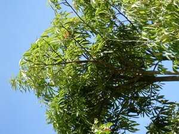

malahatas 
/malagatas/
n.
“Malahatas_tree”
n.
a small straight kind of tree which produces lots of white sap and has a thick leaf, the wood of which is good for making kuglung.
Malahatas ne kayu ka impeled ku gabii diyè te kamet ney.
The tree that I had cut down yesterday in our farm was Malahatas.
Eng. tree variety
OCM: Flora (137)
DDP: Tree (1.5.1)
Online dict status: -
Usage level: R
Updated by: RJH,AAA,TME,QDL,RJH
Last updated: 13/Oct/2009
This page last updated: 28-Dec-2019
Copyright © 2009-2014, Matigsalug Language Christian Association, Inc